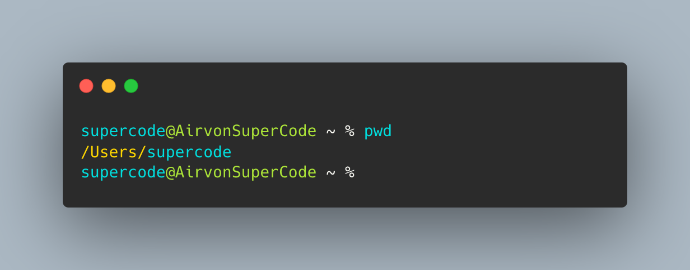

print working directory
Wo bin ich?
So sieht's aus

Ein Terminal ist textbasiert und dient als Befehlszeilenschnittstelle (Command Line Interface = CLI), in die Ihr Eure Befehle eingeben könnt. Eine Shell nimmt diese Befehle entgegen und weist das Betriebssystem an, sie auszuführen.
print working directory
Wo bin ich?
List
Liste der Verzeichnisse/Dateien anzeigen
List - in einer Spalte
Listenverzeichnis in einer Spalte anzeigen
List - mit versteckten Dateien
Liste mit versteckten Elementen anzeigen
List - long format
Alle Informationen zu Verzeichnissen/Dateien in der Liste anzeigen
Ansicht leeren
Eingabezeile in leeres Fenster setzen, vorherige Inhalte nach oben außerhalb des sichtbaren Bereichs verschieben
Change Directory
In anderes Verzeichnis wechseln
Make Directory
Verzeichnis erstellen
Change Directory - back
In übergeordnetes Verzeichnis wechseln
Datei erstellen
Datei über Eingabe des Dateinamens mit Dateierweiterung erstellen
Move
Datei verschieben
Copy
Datei kopieren über Eingabe der zu kopierenden Datei mit Leerzeichen und Name des Verzeichnisses, in das Datei kopiert werden soll
Change Directory - Root
Zurück zum User-Verzeichnis wechseln, über Eingabe von Tilde (Alt + N)
Remove
Datei löschen
Remove Directory
Verzeichnis löschen
Domain Information Grouper
Netzwerkadministration für Abfrage des DNS (Domain Name System) anzeigen
Aktuelles Terminal verlassen
Aktuelle Terminalansicht beenden
Löscht die Linie vom Cursorpunkt zurück zum Anfang.
Bewegt den Cursor an den Anfang der Zeile.
Bewegt den Cursor an das Ende der Zeile.
Zeigt die vorherigen Befehle an.